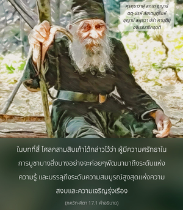

อรฺชุน ทรงถามว่า โอ้กฺฤษฺณ สถานการณ์ของพวกที่ไม่ปฏิบัติตามหลักธรรมของพระคัมภีร์ แต่บูชาตามจินตนาการของตนเองเป็นอย่างไร พวกเขาอยู่ในความดี ตัณหา หรืออวิชชา


ในบทที่สี่ โศลกสามสิบเก้าได้กล่าวไว้ว่า ผู้มีความศรัทธาในการบูชาบางสิ่งบางอย่างจะค่อยๆ พัฒนามาถึงระดับแห่งความรู้ และบรรลุถึงระดับความสมบูรณ์สูงสุดแห่งความสงบ และความเจริญรุ่งเรือง ในบทที่สิบหกสรุปว่า ผู้ไม่ปฏิบัติตามหลักธรรมที่วางไว้ในพระคัมภีร์เรียกว่า มาร หรือ อสุร และผู้ปฏิบัติตามคำสั่งสอนของพระคัมภีร์ด้วยความศรัทธา เรียกว่า เทพ หรือ เทว หากบุคคลปฏิบัติตามกฎต่างๆ ด้วยความศรัทธาซึ่งไม่ได้สอนไว้ในพระคัมภีร์สถานภาพของเขาจะเป็นเช่นไร องค์กฺฤษฺณจะทรงทำให้ข้อสงสัยของ อรฺชุน กระจ่างขึ้น พวกที่สร้างพระเจ้าบางองค์ขึ้นมาด้วยการคัดเลือกมนุษย์ และให้ความศรัทธาต่อผู้นั้น บุคคลเหล่านี้บูชาในความดี ตัณหา หรือวิชชา และจะบรรลุถึงระดับแห่งความสมบูรณ์ในชีวิตหรือไม่ เป็นไปได้หรือไม่ที่พวกนี้สถิตในความรู้ที่แท้จริง และพัฒนาตนเองไปถึงระดับแห่งความสมบูรณ์สูงสุด พวกที่ไม่ปฏิบัติตามกฎเกณฑ์ของพระคัมภีร์ แต่มีความศรัทธาต่อบางสิ่งบางอย่าง บูชาเทพเจ้า เทวดา และมนุษย์จะบรรลุถึงความสำเร็จในความพยายามของพวกตนหรือไม่ อรฺชุน ทรงตั้งคำถามเหล่านี้ต่อองค์กฺฤษฺณ